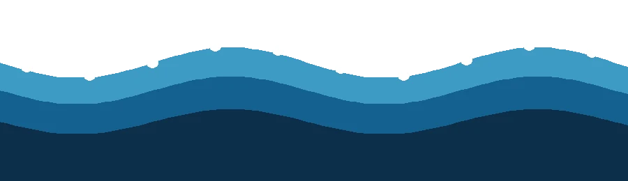
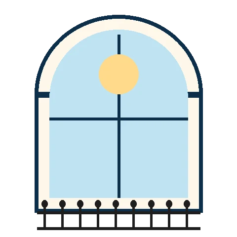
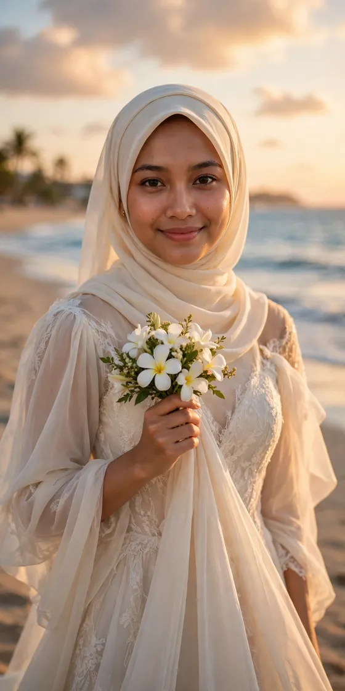
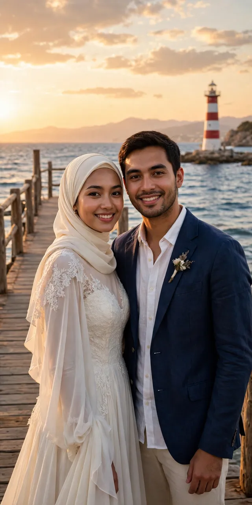
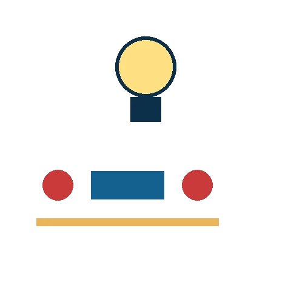
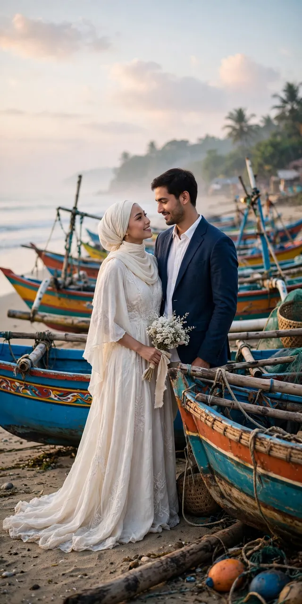
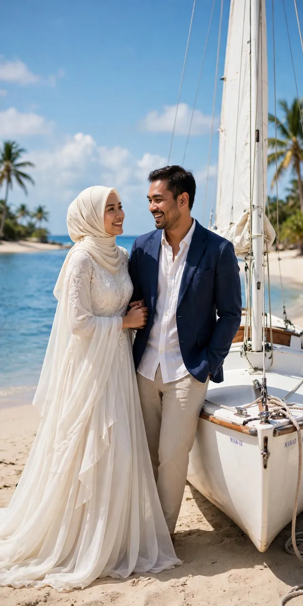
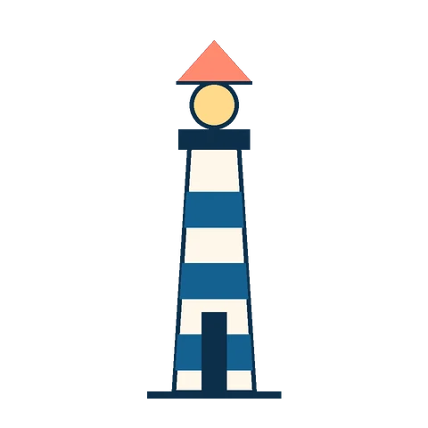

Selamat Datang di Pantai Kami

“Dan di antara tanda-tanda kebesaran-Nya ialah Dia menciptakan pasangan-pasangan untukmu agar kamu cenderung dan merasa tenteram kepadanya, dan Dia menjadikan di antaramu rasa kasih dan sayang.”
QS. AR-RUM : 21
Seperti cahaya mercusuar yang setia menuntun kapal pulang, dua hati ini akhirnya menemukan pelabuhannya. Dengan penuh syukur, kami mengundang Bapak/Ibu/Saudara/i untuk hadir dan memberi doa restu pada hari bahagia kami.

Pengantin Putri & Putra
Dua sejoli berbahagia dalam busana pantai yang elegan

Meyzsa Putri Ananda
Putri dari
Bapak H. Muhammad Ridwan
& Ibu Hj. Siti Aminah
Ahmad Fahrezzi Pratama
Putra dari
Bapak H. Bambang Sutrisno
& Ibu Hj. Ratna Dewi

Di dermaga kayu, di bawah cahaya mercusuar kami.

Kisah Mercusuar Cinta
Perjalanan kisah kami, dari perjumpaan pertama hingga hari bahagia

Berawal dari pertemuan sederhana di kampus — obrolan sore itu menjadi sinyal pertama, seperti kedip awal cahaya mercusuar di kejauhan.

Di hadapan keluarga tercinta, Fahrezzi menyampaikan niat sucinya. Dengan restu kedua orang tua, Meyzsa menerimanya dengan hati berbunga-bunga.
Persiapan demi persiapan kami jalani bersama — dua keluarga saling mengenal, menyatukan cerita dan doa, hingga hari bahagia terasa kian dekat.
Sabtu, 12 Juni 2027 — kapal kami berlabuh di pelabuhan terindah. Kami mohon doa restu agar langkah ini diberkahi hingga selamanya.
Linimasa & teks kisah di atas adalah contoh untuk tampilan tema.

Menuju Hari Bahagia
Sabtu, 12 Juni 2027 — Jakarta
Akad Nikah
Masjid Agung Al-Azhar
Jakarta Selatan
Resepsi
The Ritz-Carlton Jakarta, Pacific Place
Jakarta Selatan
Dresscode Tamu
Berkenan hadir dengan nuansa warna berikut
Panduan contoh: busana formal atau semi-formal dengan nuansa di atas akan menyatu indah dengan dekorasi acara. Terima kasih atas pengertiannya.
Denah & Info Lokasi
Alamat lengkap & patokan menuju venue (contoh)
Akad Nikah — Masjid Agung Al-Azhar
Jl. Sisingamangaraja No. 1, Kebayoran Baru, Jakarta Selatan.
Patokan: kompleks Al-Azhar di sisi jalan utama Sisingamangaraja, mudah dijangkau kendaraan pribadi maupun transportasi umum. Area parkir tersedia di sekitar kompleks; tamu disarankan tiba ±30 menit lebih awal.
Resepsi — The Ritz-Carlton Jakarta, Pacific Place
Jl. Jend. Sudirman Kav. 52–53, SCBD, Senayan, Jakarta Selatan.
Patokan: berada di kawasan SCBD, terhubung dengan Pacific Place Mall; masuk melalui lobi utama hotel. Area parkir tersedia di gedung mal; tamu disarankan tiba ±30 menit lebih awal.
Galeri Pantai Kami
Delapan potret di pantai kami — ketuk untuk memperbesar
Video Teaser Pantai
Sepotong kisah kami dalam bingkai bergerak
Video teaser — contoh (dirender dari foto pasangan tema ini dengan lagu pengiring; pada undangan asli dapat diganti video prewedding mempelai).
Siaran Langsung
Untuk keluarga & sahabat yang berhalangan hadir langsung
Resepsi Pernikahan
Sabtu, 12 Juni 2027 · mulai 11.00 WIB
menyesuaikan jam resepsi — The Ritz-Carlton Jakarta, Pacific Place
Tautan contoh (demo) — pada undangan asli, tombol ini mengarah ke siaran langsung mempelai dan aktif menjelang acara.
Abadikan momen bahagia Anda dan tandai dengan tagar resmi kami.
Galeri Tamu
Bagikan momen bahagia Anda selama acara — unggah foto Anda di sini dan tandai juga dengan tagar #MeyzsaFahrezzi.
Jadilah yang pertama membagikan momen — ketuk tombol unggah.
Contoh — foto tersimpan di perangkat ini saja (penyimpanan lokal peramban), tidak diunggah ke server.
Buku Tamu
Konfirmasi kehadiran & tuliskan doa terbaik Anda
Fitur demo pada contoh undangan ini — ucapan tersimpan hanya di perangkat Anda dan tidak terkirim ke server.
Presensi Digital
Pindai kode QR ini atau isi buku tamu saat tiba di lokasi
Kode QR membuka halaman undangan yang sedang Anda baca — tunjukkan kepada penerima tamu saat check-in.
Fitur demo pada contoh undangan ini — data check-in tersimpan hanya di perangkat Anda.
Tanda Kasih
Doa restu Anda adalah hadiah terindah. Bagi yang berkenan memberi tanda kasih:
Nomor di atas adalah contoh untuk keperluan demo tampilan undangan.
Kediaman Mempelai Wanita
Jl. Melati Indah No. 12, Kebayoran Baru,
Jakarta Selatan 12120 (alamat contoh)
Turut Mengundang
Segenap keluarga besar kedua mempelai
Keluarga Mempelai Wanita
Keluarga Besar Ridwan — Jakarta
Keluarga Besar Aminah — Bogor
Beserta segenap kerabat & handai tolan
Keluarga Mempelai Pria
Keluarga Besar Sutrisno — Jakarta
Keluarga Besar Dewi — Tangerang
Beserta segenap kerabat & handai tolan
Susunan keluarga di atas adalah contoh untuk tampilan tema.
Merupakan suatu kehormatan dan kebahagiaan bagi kami beserta keluarga apabila Bapak/Ibu/Saudara/i berkenan hadir dan memberikan doa restu kepada kedua mempelai.
KAMI YANG BERBAHAGIA
…dan kapal kami pun berlayar, dengan doa restu Anda sebagai cahayanya.
Undangan digital contoh “Mercusuar Cinta” oleh UndangYa! — seluruh nama, tanggal, dan nomor adalah data contoh.
Musik latar: “Petals on the Stone Floor”.